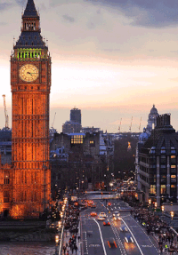
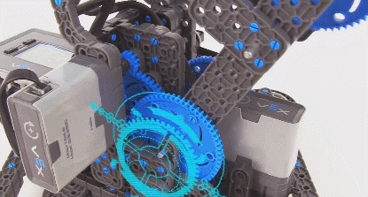
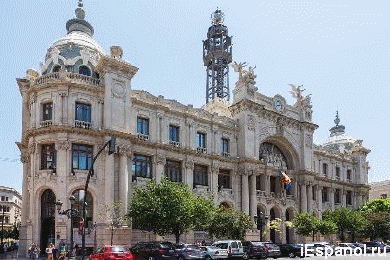

Обо мне

Языки программирования

Спорт
Я люблю заниматься спортом.Мне нравится:
- настольный теннис
- катание на:
роликах велосипеде лыжах

Языки
- Русский(мой родной язык, изучаю с рождения)
- Английский(первый иностранный, изучаю с 5 лет)
- Немецкий(второй иностранный, изучаю с 11 лет)

Робототехника
- Роботами на базе Lego с языком Mindstorms
- Роботами-C на базе Vex IQ с языком RobotC

Путешествия
Мне нравится путешествовать потому, что путешествия дают новые впечатления и расширяют кругозор.
Я уже была в:
Испании
Италии
Греции
Хорватии
Болгария
ОАЭ
Египте
на Кипре